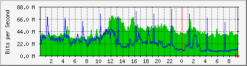
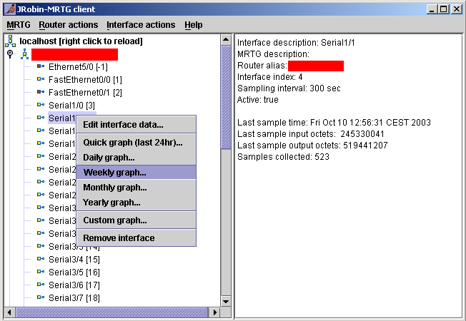
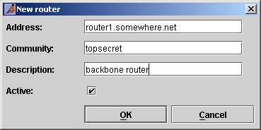
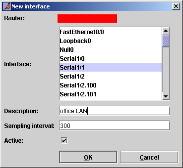

JRobin MRTG
Latest additions There is an interesting new feature in MRTG application shipped with 1.3.0 release. When you run the new server for the first time, you'll find XML templates used to create RRD files and graphs in your Since 1.3.1 release, MRTG demo application supports devices with a non-standard SNMP port number (different from 161). |
Once upon a time Tobi Oetiker created The Multi Router Traffic Grapher (MRTG):
...a tool to monitor the traffic load on network-links. MRTG generates HTML pages containing graphical images which provide a LIVE visual representation of this traffic... MRTG is based on Perl and C and works under UNIX and Windows NT...
MRTG runs as a scheduled task: cron daemon is used on UNIX systems to run MRTG each 5 minutes, for example. MRTG creates traffic graphs as PNG files embedded in simple HTML pages. All pages (with daily, weekly, monthly and yearly graphs) are created in a single directory backed by (Apache) web server: you can watch your Internet traffic (almost) LIVE by means of any web browser. Typical MRTG traffic graph looks like this one:

Under the hood, you'll find that Tobi's MRTG uses some kind of RRD files to store traffic data (MRTG native or RRDTool file format). So, I thought, it should be possible to create a similar application in pure Java using JRobin. I did not want to compete with MRTG, I just wanted to prove that JRobin was a useful tool for the same purpose. So please, don't send me to hell because "MRTG is still better". But if you want to measure your internet traffic in a simple and efficient way, you'll be probably satisfied. And, the most important thing, you'll get the idea about true JRobin capabilities.
So, JRobin-MRTG demo is finally here. It consists of two separate applications: the client and the server one. These two applications communicate through XML-RPC protocol. You can run one server application and as many client applications on as many different machines as you want. Client applications are used to control the server: to remotely add, edit, update or delete monitored network interfaces and to request specific traffic graphs. Here is a sample graph as seen in the client application:

(sensitive information removed)
A long time ago, I made a similar Java application (as a part of billing software) which uses RRDTool for the heaviest task (RRD files manipulation and graphing). Here is the same Internet traffic graph as created by RRDTool:

(sensitive information removed)
Evaluated values printed on the graph are slightly different (the difference is well bellow 1%), because the interface was monitored from two different locations with different sampling intervals. But, graphs are exactly the same. At least in my oppinion.
JRobin-MRTG server
Server application is used to:
- collect information about Internet traffic load from various network devices supporting SNMP protocol (routers, switches, network servers);
- store traffic information into JRobin RRD files;
- create graphs and other information for any number of JRobin-MRTG client applications;
To run server application, issue the following command from the command line:
java -jar mrtg-server-[version].jar
The command line could be more complex if you don't have X-server (windows) installed and you don't want to be interrupted once you log out (common situation on many network servers). In that case use the following command:
nohup java -Djava.awt.headless=true -jar mrtg-server-[version].jar > /dev/null 2>&1 &
The server application uses port 35353 to communicate with unlimited number of client applications. It can be reached with any JRobin-MRTG client from the internet (unless firewall blocks XMLRPC communication between clients and the server). If you want to restrict access to the server application, add IP addresses of trusted clients to the command line. For example:
java -Djava.awt.headless=true -jar mrtg-server-[version].jar 192.168.1.23 192.168.1.24
When server application is run for the first time, mrtg directory will be created under your $HOME directory. Newly created directory has two subdirectories: conf and rrd. The first directory (conf) containts a single XML file - hardware.dat. It holds complete information about monitored internet devices and interfaces. The second directory (rrd) contains RRD files, one file per each monitored network interface. If you monitor internet traffic through interface Serial2 on the router router1.somewhere.net, you will find a file named Serial2@router1.somewhere.net.rrd in this directory.
Server application requires the following libraries to be present:
- Jakarta XML-RPC library for communication between the server and client applications;
- SNMP library for communication with network devices (actual traffic load measurement);
- JRobin library for RRD files manipulation and graph creation.
All requested libraries can be found in the libs directory of this distribution. JFreeChart library for graph creation is no longer needed (since JRobin 1.2.0).
JRobin-MRTG client
Client application is used to control the work of the server application. Java swing library is used to create the client UI. This UI is used to:
- remotely add/edit/update/delete monitored network devices (routers, switches, network stations) and associated network interfaces;
- remotely create daily, weekly, monthly, yearly and custom-period traffic graphs on the server side, bring them to the client side and show them on the screen;
- store these graphs in PNG files.
Client application requires already mentioned Jakarta XML-RPC library for communication with the server (it can be found in the libs directory of this distribution).
To run client application issue the following command from the command line:
java -jar mrtg-client-[version].jar
You will be asked to specify the address of the host on which JRobin-MRTG server application is running. Once you are connected, you will see the client application's UI:

(sensitive information removed)
Client UI has two preview panes: the left (tree) pane contains information about monitored network interfaces. The right (text) pane contains information about the selected element of the tree on the left side. Network devices (like routers and switches) are commonly denoted as 'routers'.
Note that displayed information is not constantly updated! It gets updated whenever you add, update or remove a single router or its interface. If you want to refresh the displayed data so that it corresponds with the actual data on the server, right click anywhere on the client or choose Reload data from MRTG host from the MRTG menu. However, all kind of graphs are always generated using the latest available information from the server. And the graphs are constantly refreshed if necessary. They are as LIVE as Tobi's MRTG graphs are :)
In my humble opinion, client UI is simple and intuitive. You should have no problem to start monitoring your internet traffic load in a matter of minutes. I will explain only a few of the most interesting operations here.
How to add a router
- From the client menu, choose Router actions / Add router... New router dialog appears.

- Supply router address (like router1.somewhere.net or 123.000.111.222). If your router (or any other SNMP enabled device) listens for SNMP requests on a port different from default (161), add a collon (":") followed by a SNMP port number to the router address (like router1.somewhere.net:1611)
- Supply router community. Communities are something like passwords for SNMP access to the router. If not sure about which community to use, ask your network administrator.
- Supply some description of the router if necessary for future reference.
- Checkbox Active should be already checked by default.
- Click OK. Newly defined router appears on the left side of the screen.
How to add a network interface
- Select the router with the desired interface in the tree pane.
- From the menu, choose Interface actions / Add interface... New interface dialog appears.

(sensitive information removed)
- Select the desired interface(s) from the list of all available interfaces on the router.
- Specify description if necessary for future reference.
- Specify sampling interval in seconds. It represents the amount of time that should pass before the server applications checks the traffic counters for the specific interface on the router once again. Valid values are between 10 seconds and 600 seconds (10 minutes).
- Checkbox Active should be already checked by default.
- Click OK.
Newly defined interface appears on the left side of the screen, probably with [-1] number added to its name. It means that MRTG server still does not know the real number of the interface on the router. But if you reload data from MRTG sever a few seconds later, you will probably see some positive number instead of [-1]. It means that the new interface exists on the router. You can be sure that the traffic monitoring process has started successfully.
It is possible to add several interfaces at the same time (you can select as many available interfaces as you wish), but this may cause some strange effects from time to time. Sampling of newly added interfaces will start (almost) simultaneously and your router will get many SNMP requests. If it does not respond properly for all added interfaces, the server app might think that some interfaces do not exist any more thus pronouncing them 'inactive'. In that case, just reactivate such interface again.
I have tried to make JRobin-MRTG as clever as I could - if router gets reconfigured so that its interfaces change its corresponding interface numbers, JRobin-MRTG server application will notice this and update interface numbers on the fly.
How to create traffic graphs
- Select network interface you want to create graph for.
- Chose the desired graph type from the Interface actions menu. The following graphs can be created with a single click: daily, weekly, monthly, yearly, last 24 hours and custom-period graphs. The graph appears in the new frame.
- Click on the Save button to the right of the graph to save it in a PNG file format.
Graphs starting in the past and ending in the future (graph for the current day, week, month and year, for example) are automatically refreshed each 5 minutes. You can watch the growth of your current daily graph - LIVE.
You can open as many graph frames as you wish. All graphs will be updated simultaneously, if necessary.
Use custom graphs to create traffic graphs for arbitrary time intervals.
Full source code, both for the client and the server application is included. So, have fun! :)
Copyright © 2003, 2004 Sasa Markovic & Arne Vandamme. All Rights Reserved.